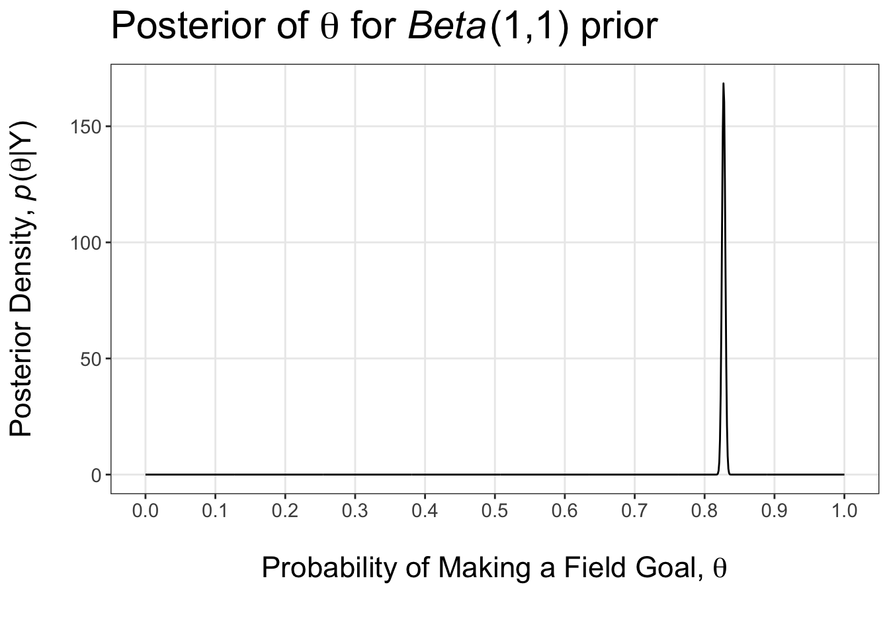
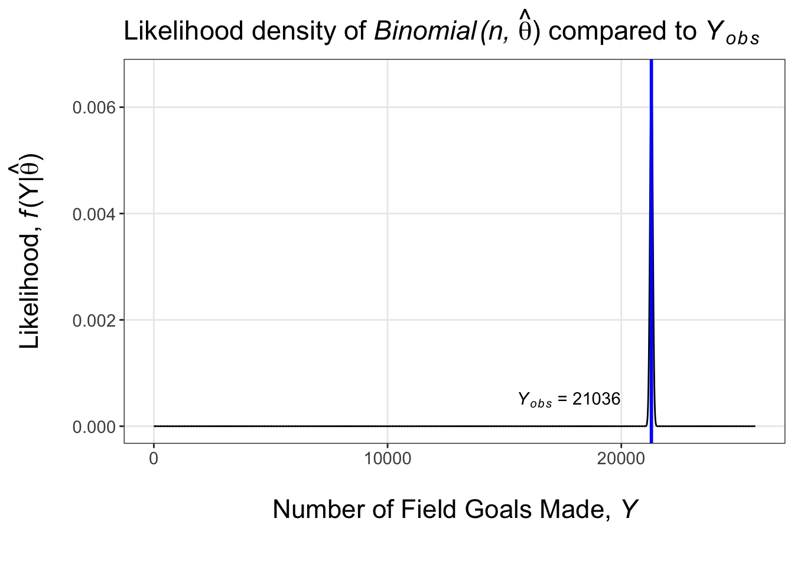

| Makes | Attempts | Makes | Attempts | Makes | Attempts |
|---|---|---|---|---|---|
This study applies Bayesian analysis to NFL field goal data since 1999, exploring how distance and clutch situations affect success rates. Using data from nflreadr, the analysis models field goal performance and assesses the reliability of kickers in various game scenarios.
Data
The data is from the nflreadr package as part of the nflverse. Let \(Y \in \{0, 1, 2, ..., n \}\) be the number of field goals made in \(n\) field goal attempts. Let \(X \in \{Regular, Clutch\}\) be the situational type of kick. A clutch kick is defined as any field goal attempt where the kicking team has the opportunity to either tie or put their team in the lead with a successful field goal (ie. kicking team is losing by 0, 1, 2, or 3 points before the kick), otherwise it is regular. Let \(Z \in \{ < 30, 30 - 39, 40 - 49, \geq 50 \}\) be the binned distance of the field goal attempt, in yards.
Aggregated Field Goal Analysis
We will begin with aggregating the data over the type of field goal and distance. The data \(Y\) is the discrete sum of \(n\) independent Bernoulli trials (0 = Miss, 1 = Make) each with success/make probability \(\theta\). Therefore, the likelihood \(Y|\theta\) then follows a binomial distribution with \(Y|\theta \sim Binomial(n, \theta)\) and \(n = 25732\) attempts. A conjugate prior for a binomial likelihood is the Beta distribution, so we select the prior \(\theta \sim Beta(a, b)\) with \(a=b=1\) for an uninformative prior. The posterior distribution of \(\theta|Y\) can be derived by
\[ \begin{aligned} p(\theta|Y) &= \frac{f(Y|\theta)\pi(\theta)}{m(Y)} \propto f(Y|\theta)\pi(\theta) \end{aligned} \]
\[ \begin{aligned} p(\theta|Y) &\propto \left[{n \choose y}\theta^{y}(1-\theta)^{n-y}\right] \left[\frac{\Gamma(a+b)}{\Gamma(a) \Gamma(b)} \theta^{a-1} (1 - \theta)^{b-1} \right] \\ p(\theta|Y) &\propto [\theta^{Y}(1-\theta)^{n-Y}][\theta^{a-1} (1 - \theta)^{b-1}] \\ &= \theta^{(Y + a) - 1}(1-\theta)^{(n - Y + b) - 1} \\ p(\theta|Y) &\propto \theta^{A-1}(1- \theta)^{B-1} \\ \end{aligned} \]
where \(A = Y + a, B = n - Y + b\). Therefore, \(\theta\|Y \sim Beta(Y+a,n-Y+b)\).
Posterior Distribution Plot and Prior Sensitivity Analysis
A plot of the posterior distribution for probability of making a field goal with the prior \(\theta \sim Beta(1,1)\) is plotted below.

Various values of the hyperparameters \(a\) and \(b\) for the prior distribution were used to analyze the sensitivity of the posterior to the prior. The posterior mean, standard deviation (SD), and 95% credible interval (CI) are in the table below for the hyperparameter values \(a = b = \{0.5, 1, 2, 10, 100 \}\). The results show that there is very little variation in the posterior for each prior, therefore, the posterior is not sensitive to the prior due to the large sample size of field goal attempts.
| Beta(a, b)1 | Mean | SD2 | 95% CI3 |
|---|---|---|---|
| 1 a = b | |||
| 2 SD = Standard Deviation | |||
| 3 CI = Credible Interval | |||
Likelihood Verification
To verify the selected likelihood \(Y|\theta \sim Binomial(n, \theta)\) is appropriate for the data, we will compare the PMF of the likelihood with the observed data \(Y_{obs} = 21287\). The parameters of the likelihood were set to \(n = 25732\) and \(\theta = \hat{\theta} = Y/n\) to represent the sample proportion. The fit likelihood PMF has highest probability at \(Y = Y_{obs}\) with very small variance when considering all possible values of \(Y\) which is closely representative of the observed data. The likelihood is appropriate.

Clutch Field Goal Analysis
A hypothesis test was conducted to determine if the distribution of made fields goals given field goal attempts differ for regular vs clutch field goals. In other words, if the probability of making a regular field goal is greater than the probability of making a clutch field goal almost all of the time or never then we can say they distributions are different. Therefore, \(H_0: \theta_R > \theta_C|Y_R, Y_C\) and \(H_A: \theta_R \ngtr \theta_C|Y_R, Y_C\). Monte Carlo sampling was used with 10,000 samples from the posterior distribution of both \(\theta_R|Y_R,Y_C\) and \(\theta_C|Y_R,Y_C\) to determine \(P(\theta_R > \theta_C|Y_R, Y_C)\). From the simulation, the probability of making a regular kick is greater than a clutch kick with probability \(P(\theta_R > \theta_C|Y_R, Y_C) = 0.9879\) and conclude there is a difference.
Distance Field Goal Analysis
The data was further parsed into subgroups by binned field goal distance. We repeated the analysis from above, but for each subgroup to determine if the probability of making a regular field goal is higher than a clutch field goal. The hypotheses are now \(H_0: \theta_{R,Z_{i}} > \theta_{C,Z_{i}}|Y_{R,Z_{i}}, Y_{C,Z_{i}}\) and \(H_A: \theta_{R,Z_{i}} \ngtr \theta_{C,Z_{i}}|Y_{R,Z_{i}}, Y_{C,Z_{i}}\). Monte Carlo simulations were run again in the same fashion and the results are in Table 3 below. We can see that the distributions do not differ for each distance except for the 40 - 49 yard subgroup. The probability that the distributions are different is much higher for kicks is greater than 30 yards.
| Distance (Yards) | Probability |
|---|---|